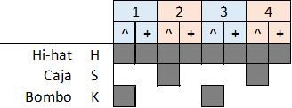
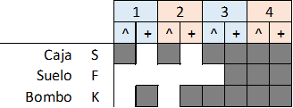
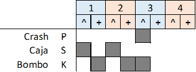
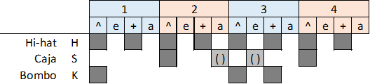

Estrofa: (Silencio: 8+3)(Br1: 1) Intro: Estrofa: (R1: 8)(R2: 3)(Br1: 1) (x2) Solo: (R1: 8)(R2: 3)(Br1: 1) (x2) Estrofa: (R1: 8)(R2: 3)(Br1: 1) (x2) Final: (R2: 3)(Br2: 1)




(Miguel) Amanece que no es poco en esta gran ciudad siempre caminando, siempre a punto de explorar. Viendo mil rincones con tanto que contar, la cara de la abuela y mil momentos que guardar. Pero por favor que nos dejen en paz, en paz y libertad, si somos tabernarios y no me encerrarán. (Roberto) Habrá un día en que todos sepamos respetar al niño en la escuela, al hombre en su hogar, al abuelo en su descanso, al patrón al navegar, al Lolo en su camión y ese músico en su hangar. Pero por favor que nos dejen en paz, en paz y libertad, si somos tabernarios y a quién le va a importar. (Laura) Vidas que se entrecruzan, no hay destino sólo azar forjando esos momentos que brillan en la ciudad. Al padre con sus hijos, al currante al madrugar, al joven siempre a punto y esa cerveza en el sofá. Pero por favor que nos dejen en paz, en paz y libertad, si somos tabernarios y a quién le va a importar. (Mariano) También me gusta la fruta y un rojo atardecer, el sol de la mañana y el roce de tu piel. Andemos por la historia en la Taberna de José, en la Calle de las infantas o en la casa del Marqués. Pero por favor que nos dejen en paz, en paz y libertad, si somos tabernarios y a quién le va a importar. (Javier) El ruido de tus calles, noches, vidas, bares, atascos, metros, gente, tantas vidas familiares, amado, amante, admirador, también alma sin voz, amigo de tus anhelos, así será de Madrid al cielo. Pero por favor que nos dejen en paz, en paz y libertad, si somos tabernarios y no me encerrarán. Pero por favor que nos dejen en paz, en paz y libertad, si somos tabernarios y a quién le va a importar.